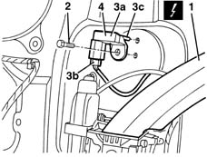
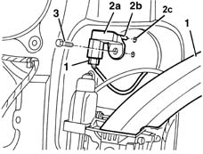

5580C40 sidebag sensor (one), lh or rh - r r
- Path
- Procedures > 55 ELECTRICAL EQUIPMENT > 5580 SPECIAL ACCESSORIES > 5580C air bag system > 5580C40 sidebag sensor (one), lh or rh - r r
- Kind
- repair procedure (removal / refitting; the operation number is the code)
- Applies to
- all engines; all production periods
- Interactive page
- https://sloeber94.github.io/elrnDB-lYpsln/en/#/2429455
Applies to: all engines; all production periods
Place the ignition key in the OFF position and extract it;
Disconnect the battery.
Applies to: all engines; all production periods
 Removing
Removing
 Refitting
Refitting7040L40 front compartment scuff strip - r r
7050A20 one-piece rear seat cushion - r r
1. Working inside the front seat belt pretensioner compartment, move the belt slightly.
2. Undo the bolt
3. Move sensor (3a) slightly, release reference pin (3a) from its seat and disconnect electrical connection (3b).
 | Name | Connector |
|---|---|---|
3 | Sensor for driver's, Side Bag |
| Name | Connector |
|---|---|---|
3 | Sensor for driver's, Side Bag |
4. Recover the sensor.

Applies to: all engines; all production periods
Refitting
RemovingCheck that the side Air Bag sensor is not damaged.
1. Connect the electrical connection.
2. Position the Side Bag sensor (2a) in its housing.
3. Tighten the bolt.

Applies to: all engines; all production periods